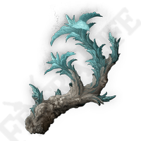

Why bother with swords when you can harry potter your way through the game?
Meteors, lasers, glowing stones and much more! This powerful build lets you live out all your wizardly dreams
This is a rough outline of the stats you should be aiming for.
Treat this is a general guide and not a rigid ruleset, which means do not be afraid to deviate if you find yourself suddenly wanting to become a strength powerhouse! Do what you enjoy.
Intelligence
The bread and butter of any mage. Target level is 99.
Mind
Mind is your mana. Whats a mage without mana? target level is 99.
Vigor
Raise as necessary if you require more survivability.
Endurance
Raise as necessary if you find yourself needing heavier armour.
Primal glintstone blade
This will reduce the mana cost of spells whilst also reducing max HP.
Magic scorpion charm
This will increase your magic damage but also increase incoming damage.

Ancestral spirit horn
Restores mana upon defeating enemies.
Graven-mass talisman
A Further boost to outgoing magic damage.